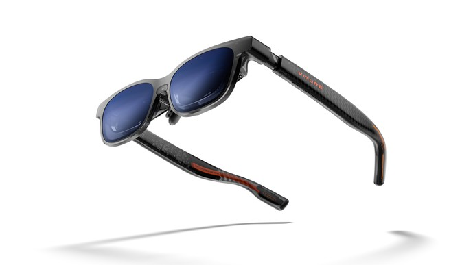

Ray-Ban Meta Gen 2 Smart Glasses

The Ray-Ban Meta Gen 2 (2025) are the best everyday smart glasses for most people. A collaboration between Meta and EssilorLuxottica, they come in a wide range of classic Ray-Ban frames — Wayfarer, Skyler, Headliner and more — including prescription and tinted options. The 12 MP camera now shoots up to 3K video at 30 fps, and five microphones enable spatial audio capture and hands-free Meta AI queries, including live language translation and real-world context awareness. With 32 GB of onboard storage, 8 hours of battery life, and a case that adds another 48 hours, they're genuinely all-day wearable. Live streaming to Instagram and Facebook is built in.
| Camera | 12 MP, up to 3K @ 30 fps video |
|---|---|
| Storage | 32 GB |
| Audio | Custom open-ear speakers, 5-mic array |
| Connectivity | Bluetooth 5.3, Wi-Fi (live streaming) |
| Battery life | 8 hrs; case adds 48 hrs |
| Water resistance | IPX4 |
| Weight | 51 g |
| AI features | Meta AI — live translation, visual context |
| Companion app | Meta View (iOS & Android) |
| Price | From $379 |
Shop Ray-Ban Meta Glasses
XREAL One Pro

The XREAL One Pro (2025) is the current flagship from XREAL and the best virtual-screen smart glasses available right now. It replaces the Air 2 line with a sleeker flat-prism design that sits closer to the eyes for a more immersive feel. The Sony 0.55" Micro-OLED display delivers a 171-inch virtual screen at 1080p and up to 120 Hz, with a 57° field of view — wider than any previous XREAL model. The built-in X1 chip enables 3DoF head tracking natively, so the screen stays pinned in space without needing an accessory or app. Bose stereo speakers are integrated into the frame. It connects via USB-C to phones, laptops, Steam Deck, and consoles — no battery required. An optional XREAL Eye camera add-on ($99) brings 12 MP photo and 1080p video capture.
| Display | Sony 0.55" Micro-OLED, 1920×1080 per eye |
|---|---|
| Refresh rate | Up to 120 Hz |
| Brightness | 700 nits |
| Field of view | 57° |
| Virtual screen size | Up to 171" |
| Tracking | 3DoF (built-in X1 chip) |
| Electrochromic lens | Yes (adjustable tint) |
| Connection | USB-C (DisplayPort Alt Mode) |
| Audio | Bose stereo speakers |
| Weight | 87 g |
| Compatibility | Android, PC, Mac, Steam Deck, consoles (via adapter) |
| Price | From $599 |
Shop XREAL Glasses
Even Realities G1

The Even Realities G1 are prescription-compatible smart glasses with a discreet Micro-LED waveguide display visible only to the wearer. Unlike AR headsets, the G1 prioritises all-day wearability — they look like ordinary glasses and weigh under 40 g. The green monochrome HUD shows notifications, navigation, translations, AI responses, and a teleprompter, projected at roughly 2 meters in front of you to reduce eye strain. The companion app (iOS & Android) handles AI queries via Even AI, and the glasses support BLE 5.2 for a stable phone connection. Battery lasts up to 1.5 days on a charge. Note: the G1 has been succeeded by the Even G2, but remains available.
| Display | Micro-LED waveguide, green monochrome |
|---|---|
| Resolution | 640 × 200 per eye |
| Brightness | 1000 nits |
| Field of view | 25° |
| Refresh rate | 20 Hz |
| Passthrough | 98% (near-clear lenses) |
| Connectivity | Bluetooth BLE 5.2 |
| Battery life | Up to 1.5 days; ~2–3 hrs to charge |
| Water resistance | Splash & light rain resistant |
| Weight | ~38 g |
| Prescription lenses | Yes (MR™ Series by Mitsui Chemicals) |
| Price | From $269 |
Shop Even Realities G1
Viture Luma Pro XR Glasses

The Viture Luma Pro XR (2025) are the top pick for gaming and high-brightness use. They deliver a 152-inch virtual screen at 1200p resolution with up to 120 Hz refresh rate and a class-leading 1000 nits of perceived brightness — making them the best choice for use in bright environments or outdoors. Diopter dials on each lens let you dial in focus without prescription inserts, and electrochromic film dims the lenses for better contrast. The free SpaceWalker app unlocks 3DoF spatial mode on supported Android devices. Viture's accessory ecosystem is particularly strong: an 8BitDo-designed gaming controller, a Pro Mobile Dock with HDMI input for Nintendo Switch 2 and streaming sticks, and a Pro Neckband Android computer for standalone streaming and cloud gaming.
| Display | Micro-OLED, 1920×1200 per eye |
|---|---|
| Refresh rate | Up to 120 Hz |
| Brightness | 1000 nits |
| Field of view | 52° |
| Virtual screen size | Up to 152" |
| Diopter dials | Yes (per-eye focus adjustment) |
| Electrochromic lens | Yes (adjustable tint) |
| Connection | USB-C (DisplayPort Alt Mode) |
| Audio | Harman stereo speakers |
| Compatibility | Android, PC, Mac, Steam Deck, consoles (via adapter) |
| Price | From $425 |
Shop Viture Luma Pro